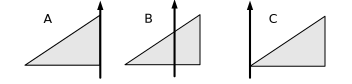
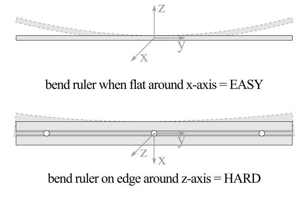
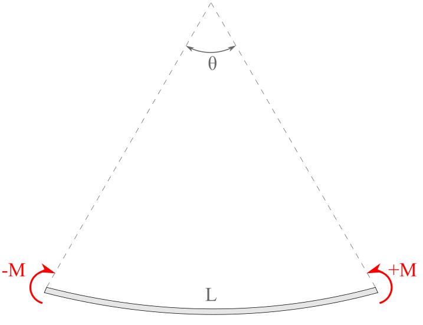

Why does the area moment of inertia integral equation include a distance squared term?
When performing a single integral, either \(dx\) or \(dy\text{,}\) what is your differential element \(dA\) shape?
As you know, two dimensional shapes like rectangles and circles have properties such as area, perimeter, and centroid. These are purely geometric properties since they belong to the shape alone, in contrast to physical properties like weight and mass which belong to real physical objects.
In this section we introduce several new geometric properties useful in engineering including the Area Moment of Inertia.
The integral properties of shapes, along with the names and symbols commonly used to represent them are given in the table below. You are already familiar with area from Geometry and the first moment of area from Chapter 7. The remaining properties are the subject of this chapter. They all have a similar form, and can be evaluated using similar integration techniques.
Instructions.
Figure10.1.1.Definitions for area properties
This interactive diagram defines the terms which apply to all of the property definitions below. It shows a generic plane area \(A\text{,}\) divided into differential elements \(dA = dx\ dy\text{.}\) The differential element \(dA\) is an infinitesimally tiny rectangle centered about point \((x,y)\text{,}\) which can range over the entire area. The distances to the element from the \(y\) axis, the \(x\) axis and the origin are designated \(x\text{,}\)\(y\text{,}\) and \(r\) respectively. The centroid of the entire area is located at \((\bar{x},\bar{y})\text{.}\)
All of these properties are defined as integrals over an area \(A\text{.}\) These integrals may be evaluated by double-integrating over \(x\) and \(y\) in Cartesian coordinates or \(r\) and \(\theta\) in polar coordinates. They can also be evaluated using single integration using the methods demonstrated in Subsection 10.2.2.
None of these integrals can be evaluated until a specific shape is chosen. When shape has been specified, the bounding functions and integration limits can be determined and only then may the integral be solved using appropriate integration techniques. If the shape is specified in general terms, say a rectangle with base \(b\) and height \(h\text{,}\) then the result of the integration will be a formula for the property applicable to all similar shapes.
Subsection10.1.1Area
The total area of a shape is found by integrating the differential elements of area over the entire shape.
\begin{equation}
A = \int_A dA\text{.}\tag{10.1.1}
\end{equation}
The limit on this integral is indicated with an \(A\) to indicate that the integration is carried out over the entire area. The resulting value will have units of \([\textrm{length}]^2\) and does not depend on the position of the shape on the coordinate plane.
Since the area formulas for common shapes are well known, you only need to use integration in uncommon situations.
Subsection10.1.2First Moment of Area
The first moment of area, which was introduced in Chapter 7, is defined by these two equations.
The first moment of area with respect to an axis is a measure of the distribution of the shape about an axis. It depends on the shape and also its location on the coordinate plain. Portions of area on the negative side of the selected axis make the first moment smaller, while areas on the positive side make it larger. If the shape’s centroid is located exactly on the axis, the integral will sum to zero because the contributions of area above and below the axis cancel each other.
The average value of the first moment of area is found by is found by dividing the first moment by the area of the shape, and the result indicates the distance from the axis to centroid of the shape.
As you can see, these equations are similar to the equations for the first moment of area (10.1.2), except that the distance terms \(x\) and \(y\) are now squared. In recognition of the similarity, the area moments of inertia are also known as the second moments of area. We will use the terms moment of inertia and second moment interchangeably. These two quantities are sometimes designated as rectangular moments of inertia to distinguish them from the polar moment of inertia described in the next section.
Like the first moment, the second moment of area provides a measure of the distribution of area around an axis, but in this case the distance to each element is squared. This gives increased importance to portions of the area which are far from the axis. Squaring the distance means that identical elements on opposite sides of the axis both contribute to the sum rather than cancel each other out as they do in the first moment. As a result, the moment of inertia is always a positive quantity.
Two identical shapes can have completely different moments of inertia, depending on how the shape is distributed around the axis. A shape with most of its area close to the axis has a smaller moment of inertia than the same shape would if its area was distributed farther from the axis. This is a non-linear effect, because when the distance term is doubled, the contribution of that element to the sum increases fourfold.
Question10.1.2.
These three triangles are all the same size. Rank them from largest to largest smallest moment of inertia with respect to the \(y\) axis.

Answer.
From smallest to largest: \(I_C > I_A > I_B\text{.}\)
Solution.
Although the areas of all three triangles are the same, triangle \(B\) has the area on both sides of the \(y\) axis and relatively close to it, and so has the smallest \(I\text{,}\) while triangle \(C\) has the most of its area far from the \(y\) axis which makes its moment of inertia largest. We will be able to show later that the \(I_C = 3 I_A = 9 I_B\text{.}\)
Moving a shape away from the axis (or moving the axis away from the shape) increases its moment of inertia, and moving it closer to the axis decreases it, until it crosses to the other side of the axis, and then its moment of inertia will begin to increase again.
The minimum moment of inertia occurs when the centroid of the shape falls on the axis. When this occurs, the moment of inertia is called the centroidal moment of inertia. A bar over the symbol \(I\) is used to indicate that a moment of inertia is centroidal. So for example, \(\bar{I}_x\) and \(\bar{I}_y\) represent the “centroidal moment of inertia with respect to the \(x\) axis” and the “the centroidal moment of inertia with respect to the \(y\) axis.” The bar in this case does not mean that moment of inertia is a vector quantity. Note that a shape can have multiple centroidal moments of inertia, because more than one axis can pass through the centroid of a shape. In this text, we will only the vertical and horizontal axes, but they are not the only possibilities.
The centroidal moment of inertia is particularly important. We will see in (10.3.1) that if we know a shape’s centroidal moment of inertia for some axis direction, it is a simple process to calculate the moment of inertia of the shape about any other parallel axis. The moment of inertia is used in Mechanics of Materials to find stress and deflection in beams and to determine the load which will cause a column to buckle.
We stated earlier that the centroidal moment of inertia is the minimum moment of inertia, but by this we mean, the minimum moment of inertia for a particular axis direction, for example horizontal. Other centroidal axes may have a different moment of inertia, either larger or smaller than the moment of inertia about a horizontal centroidal axis. The centroidal axes which have the absolute minimum and maximum moment of inertia are called the principle axes. The principle axes are not necessarily horizontal and vertical.
Thinking Deeper10.1.3.Beam bending.
To get a feel for how moment of inertia affects engineering design, find a ruler, a yardstick, or something similar: long with a rectangular cross section.
Try to bend the ruler both when it’s flat and also when it’s turned on edge. You will find that bending the ruler around the \(x\) axis while it’s flat is easy compared to bending it the other way, around the \(z\) axis. Why is it easier to bend the ruler one way than the other? It’s the same object, made of the same material either way.
The answer has to due with the moment of inertia, and how it relates to the bending axis.

Figure10.1.4.Bending a ruler.
As engineers we are not satisfied with merely knowing that it’s harder to bend a ruler one way than the other, we’d like to know how much harder?
For a \(\inch{1/8}\) thick ruler that is \(\inch{1}\) tall, the bending resistance about the \(z\) axis is over 20 times more than the bending resistance the other way, about the \(x\) axis.
To further see how the moment of inertia comes into play, consider the curvature caused by applying opposing moments to the ends of a beam such as your ruler. You will cause it to bend into an arc of a circle of some radius. A curious engineer would like to know how the curvature of the beam is related to the applied moment, the geometry, and the physical properties of the beam.

Figure10.1.5.Beam of length \(L\) which is being bent by opposing couple-moments to an arc with angle \(\theta\text{.}\)
You will learn in Mechanics of Materials that the relationship is:
\(E\) is a material property called Young’s Modulus or the modulus of elasticity which characterizes the stiffness of a material.
\(L\) is the length of the beam, and
\(I\) is the moment of inertia of the cross-section of the beam about the bending axis.
\(M\) is the moment applied to the ends of the beam, and
\(\theta\) is the curvature of the beam.
Since \(E\) and \(I\) are in the numerator and \(L\) is in the denominator, a longer beam is more flexible and larger values of \(E\) or \(I\) make the beam stiffer. With those properties fixed, angle \(\theta\) is directly proportional to the moment \(M\text{.}\)
The sag, or deflection, of a beam when supporting a load is also related to these factors, and the placement of the load as well. For example, if a beam is loaded with a concentrated force \(P\) at its center its maximum deflection \(\delta_{\text{max}}\) will occur at the midpoint, with
\begin{align}
J_O \amp = \int_A r^2\ dA \tag{10.1.5}
\end{align}
and has units of \([\textrm{length}]^4\text{.}\)
The polar moment of inertia is a another measure of the distribution of an area but, in this case, about a point at the origin rather than about an axis. One important application of this value is to quantify the resistance of a shaft to torsion or twisting due to the shape of its cross-section.
Thinking Deeper10.1.6.Why don’t we call the polar moment of inertia \(I_z\text{?}\)
The squared distance in the polar moment of inertia formula is the distance from the \(z\) axis, so it would seem reasonable to name the polar moment \(I_z\) to be consistent with \(I_x\) and \(I_y,\) which use distances from the \(x\) and \(y\) axes.
Instead engineers use the letter \(J\) to represent this quantity. Why?
Instructions.
Click on the labeled rectangle to change the view to show the appropriate differential element to calculate each moment of inertia. Rotate element \(dA\) through space.
Figure10.1.7.In-plane and out-of-plane rotation of element \(dA\) about the \(x\text{,}\)\(y\) and \(z\) axes.
If areas only existed in the \(x\)-\(y\) plane, this would be fine, but the real world is three-dimensional, so \(I_z\) must be reserved to use with areas in the \(x\)-\(z\) or \(y\)-\(z\) plane.
As shown in the interactive, the rectangular moment of inertia \(I\) involves rotating element \(dA\) about out-of-plane around an in-plain axis, and the polar moment \(J\) involves rotating the element in-plane around a perpendicular axis. The two quantities represent fundamentally different things.
Subsection10.1.5Product of Inertia
The final property of interest is the product of inertia and it is defined as
\begin{align}
I_{xy} \amp = \int_A x y\ dA \tag{10.1.6}
\end{align}
where \(x\) and \(y\) are defined as in Figure 10.1.1. Like the others, the units associated with this quantity are \([\textrm{length}]^4\text{.}\) The name was chosen because the distance squared term in the integral is the product of the element’s coordinates. In contrast to the other area moments, which are always positive, the product of inertia can be a positive, negative or zero.